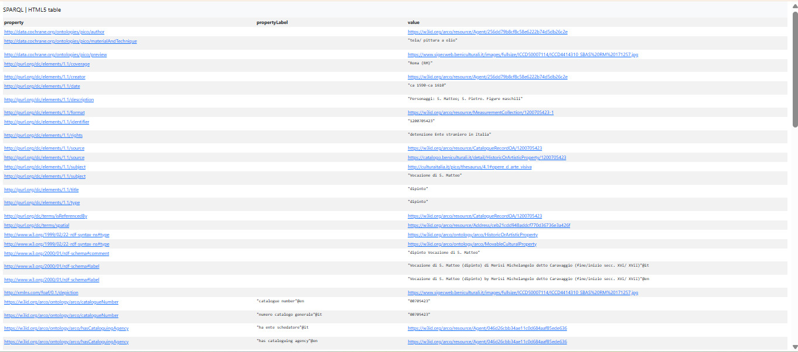

<!DOCTYPE html>
<html lang="en">
<head>
<meta charset="UTF-8">
<title>SPARQL Queries | Saint Matthew Project</title>
<style>
body{
    margin:0;
    font-family: 'Segoe UI', Tahoma, Geneva, Verdana, sans-serif;
    background:#fafafa;
    color:#222;
    line-height:1.7;
}

header{
    background:#1b1b1b;
    color:white;
    text-align:center;
    padding:35px 20px;
    border-bottom:3px solid #c9a227;
}

header h1{
    margin:0;
    font-size:28px;
}

header p{
    margin-top:6px;
    color:#ccc;
}

nav{
    background:#222;
    display:flex;
    justify-content:center;
    flex-wrap:wrap;
}

nav a{
    color:white;
    text-decoration:none;
    padding:12px 16px;
}

nav a:hover{
    background:#c9a227;
    color:#111;
}

.container{
    max-width:950px;
    margin:40px auto;
    background:white;
    padding:35px;
    border-radius:12px;
    box-shadow:0 6px 25px rgba(0,0,0,0.08);
    border-left:5px solid #c9a227;
}

pre{
    background:#0f0f0f;
    color:#f1f1f1;
    padding:15px;
    overflow-x:auto;
    border-radius:10px;
    font-size:13px;
}

h2{
    margin-top:30px;
}

footer{
    text-align:center;
    padding:20px;
    margin-top:40px;
    background:#1b1b1b;
    color:#ccc;
    border-top:3px solid #c9a227;
}

.expl{
    background:#f8f8f8;
    border-left:4px solid #c9a227;
    padding:15px 20px;
    margin:20px 0;
    border-radius:8px;
}

.expl h3{
    margin-top:0;
    color:#1b1b1b;
}

.expl code{
    background:#ececec;
    padding:2px 5px;
    border-radius:4px;
    font-family:Consolas, monospace;
}

.query-img{
    display:block;
    width:100%;
    max-width:600px;
    margin:20px auto;
    border-radius:10px;
    box-shadow:0 8px 20px rgba(0,0,0,0.15);
}
</style>
    
<header>
<h1>The Calling of Saint Matthew</h1>
<p>Michelangelo Merisi da Caravaggio (1599–1600)</p>
</header>

<nav>
<a href="index.html">Home</a>
<a href="sparql.html">SPARQL</a>
<a href="llm.html">LLM Analysis</a>
<a href="gaps.html">Identifying Gaps</a>
<a href="rdf.html">RDF Triples</a>
<a href="challenges.html">Challenges</a>
<a href="conclusion.html">Concluision</a>
</nav>

<div class="container">

<!-- QUERY 1 -->
<h2>Query 1</h2>

<p>
We began with a broad survey to obtain all Cultural Properties related to Saint Matthew, without limiting the author. The goal was to understand how the subject is represented in ArCo and which works are related to it.
</p>

<div class="expl">

<h3>Explanation of keywords used:</h3>

<ul>
  <li><b><code>FILTER(REGEX)</code></b>: used to capture variations of the subject such as “San Matteo”, “vocazione”, and “simbolo di San Matteo”.</li>
  <li><b><code>DISTINCT</code></b>: eliminates duplicate results caused by bilingual labels.</li>
  <li><b><code>?cp</code></b>: stands for Cultural Property.</li>
  <li><b><code>?label</code></b>: represents the title or name of the cultural property.</li>
</ul>

</div>

<pre>
PREFIX rdfs: <http://www.w3.org/2000/01/rdf-schema#>
PREFIX arco: <https://w3id.org/arco/ontology/arco/>

SELECT DISTINCT ?cp ?label
WHERE {
 ?cp a arco:HistoricOrArtisticProperty ;
     rdfs:label ?label .

 FILTER(REGEX(?label, "san matteo|vocazione|simbolo", "i"))
}
</pre>


<h3>Results</h3>

<p>
The research generated a broad and heterogeneous archive, comprising several examples of paintings of Saint Matthew, in sculpture or decorative forms. In addition, the study also identified paintings created by different authors such as Antonio Cifrondi, Rutilio Manetti or the Maestro di Roccaverano, together with other art pieces relating to Saint Matthew but unrelated to the artist from Caravaggio.
</p>

<p>
From an interpretative perspective, the data set at this stage is thematically relevant but artistically unfiltered. It covers a variety of centuries, styles, and artistic contexts, without distinguishing between Caravaggio's works and those of other artists depicting the same subject.
</p>

<p>
This highlights an important limitation: thematic filtering alone is not sufficient to identify works by a specific author, as additional constraints on authorship or attribution are required to refine the results.
</p>

<hr>

<!-- QUERY 2 -->
<h2>Query 2 — Author-level filtering (initial attempt)</h2>

<p>
We improved the query to include author information in order to separate works by Michelangelo Merisi da Caravaggio.
</p>

<div class="expl">

<h3>Explanation of keywords used:</h3>

<ul>
  <li><b><code>a-cd:hasAuthor</code></b>: links cultural properties to their authors.</li>
  <li><b><code>REGEX</code></b>: used to detect patterns inside text values such as “merisi” and “caravaggio”.</li>
  <li><b><code>FILTER</code></b>: restricts results based on conditions applied to labels and author names.</li>
  <li><b><code>?authorLabel</code></b>: represents the name of the author in the dataset.</li>
</ul>

</div>

<pre>
PREFIX rdfs: <http://www.w3.org/2000/01/rdf-schema#>
PREFIX arco: <https://w3id.org/arco/ontology/arco/>
PREFIX a-cd: <https://w3id.org/arco/ontology/context-description/>

SELECT DISTINCT ?cp ?label ?authorLabel
WHERE {
 ?cp a arco:HistoricOrArtisticProperty ;
     rdfs:label ?label ;
     a-cd:hasAuthor ?author .

 ?author rdfs:label ?authorLabel .

 FILTER(
   REGEX(?authorLabel, "merisi", "i") ||
   REGEX(?authorLabel, "caravaggio", "i")
 )

 FILTER(
   REGEX(?label, "vocazione|san matteo", "i")
 )
}
</pre>


<h3>Results</h3>

<p>
This clearly revealed a huge issue with name-ambiguity when the query "Caravaggio" returned many results containing "Caravaggio," such as Stella Fermo detto Fermo da Caravaggio, Polidoro da Caravaggio and many more historical agents of similar names.
</p>

<p>
From a historical-interpretation perspective, this demonstrates a fundamental problem: since "Caravaggio" itself applies to more historical agents than just Michelangelo Merisi da Caravaggio, it becomes the target of more than just one person in the dataset.
</p>

<p>
This suggests that simple string matching is not sufficient to ensure the correct identification of authors, as it cannot distinguish between individuals with similar names.
</p>

<hr>

<!-- QUERY 3 -->
<h2>Query 3 — Identity-based filtering (final resolution)</h2>

<p>
To solve ambiguity, we replaced text-based filtering with exact IRI matching for Michelangelo Merisi da Caravaggio.
</p>

<pre>
PREFIX rdfs: <http://www.w3.org/2000/01/rdf-schema#>
PREFIX arco: <https://w3id.org/arco/ontology/arco/>

SELECT DISTINCT ?cp ?label
WHERE {
 ?cp a arco:HistoricOrArtisticProperty ;
     rdfs:label ?label ;
     a-cd:hasAuthor <https://w3id.org/arco/resource/Agent/256dd79b8cf8c58e6222b74d5db26c2e> .
}
</pre>


<h3>Results</h3>

<p>
The final query successfully isolated the canonical works by Caravaggio related to Saint Matthew, namely <i>Vocazione di S. Matteo</i>, <i>Martirio di S. Matteo</i>, and <i>San Matteo e l’angelo</i>.
</p>

<p>
From an interpretative perspective, this stage shows that the dataset has been properly refined. Only Michelangelo Merisi da Caravaggio is now included, all previously identified false positives have been removed, and the ambiguity in the results has been resolved.
</p>

<p>
As a result, the dataset is fully disambiguated, and the Saint Matthew cycle is correctly reconstructed, reflecting a coherent and accurate representation of Caravaggio’s works within the knowledge graph.
</p>
    


<hr>

<h2>Query 4 — Investigating used properties for “Vocazione di S. Matteo” (Caravaggio)</h2> 
         
<p>
The aim of this query was to understand which properties and vocabularies are used in the ArCo dataset to describe the artwork “Vocazione di S. Matteo” (also known as The Calling of Saint Matthew) by Caravaggio.
By extracting all predicate–object pairs associated with the resource, we aimed to identify which ontologies are used, what type of information is attached, and how rich the semantic description of the artwork is.
</p>

<div class="expl">

<h3>Explanation of keywords used:</h3>

<ul>
  <li><b><code>?property ?value</code></b>: returns predicate–object pairs describing the resource.</li>
  <li><b><code>ORDER BY ?property</code></b>: sorts results alphabetically by property URI.</li>
  <li><b><code>OPTIONAL</code></b>: retrieves labels for properties when available, without breaking results.</li>
</ul>

</div>

<pre>
PREFIX rdfs: <http://www.w3.org/2000/01/rdf-schema#>

SELECT DISTINCT ?property ?propertyLabel ?value
WHERE {
  <https://w3id.org/arco/resource/HistoricOrArtisticProperty/1200705423> ?property ?value .

  OPTIONAL {
    ?property rdfs:label ?propertyLabel .
  }
}
ORDER BY ?property
</pre>



<h3>Results</h3>

<p>
The query shows that the artwork is described through a rich and heterogeneous RDF structure, involving multiple vocabularies.
</p>

<p>
1️⃣ General metadata (Dublin Core): creator (Caravaggio), title/type, date, identifier, rights and source information.
</p>

<p>
2️⃣ Cultural heritage structure (ArCo ontology): authorship, catalogue record links, legal situation, and cataloguing information.
</p>

<p>
3️⃣ Artistic information: material and technique (oil on canvas), conservation status, and cultural property classification.
</p>

<p>
4️⃣ Iconographic content: subject references such as “Vocazione di S. Matteo” and figures like S. Pietro.
</p>

<p>
5️⃣ Spatial representation: linked address resource resolving the artwork location to Rome (Italy).
</p>
      
<br><br>
</div>

<footer>
SPARQL Analysis | KE4H Project © 2026
</footer>

</body>
</html>
